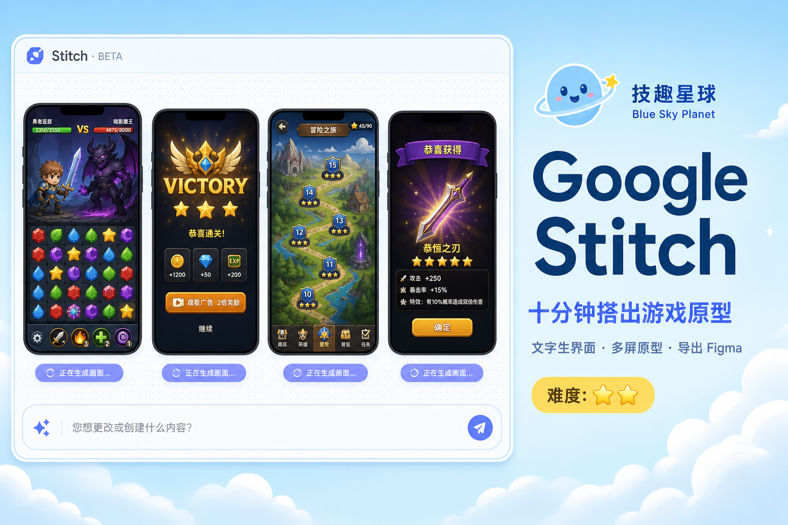
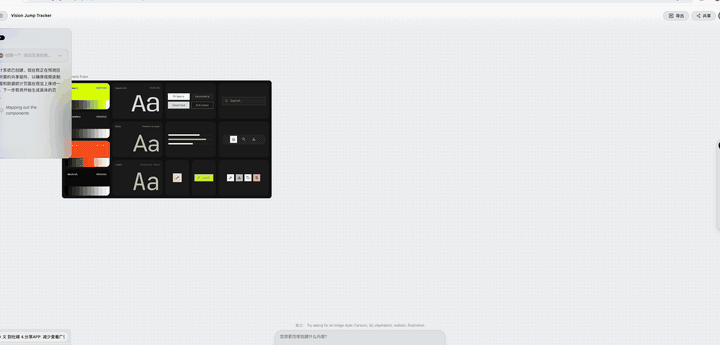
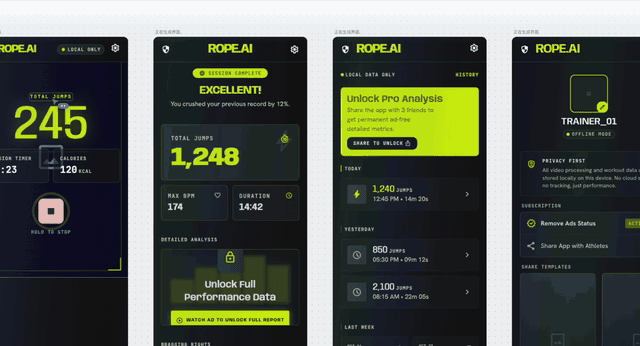
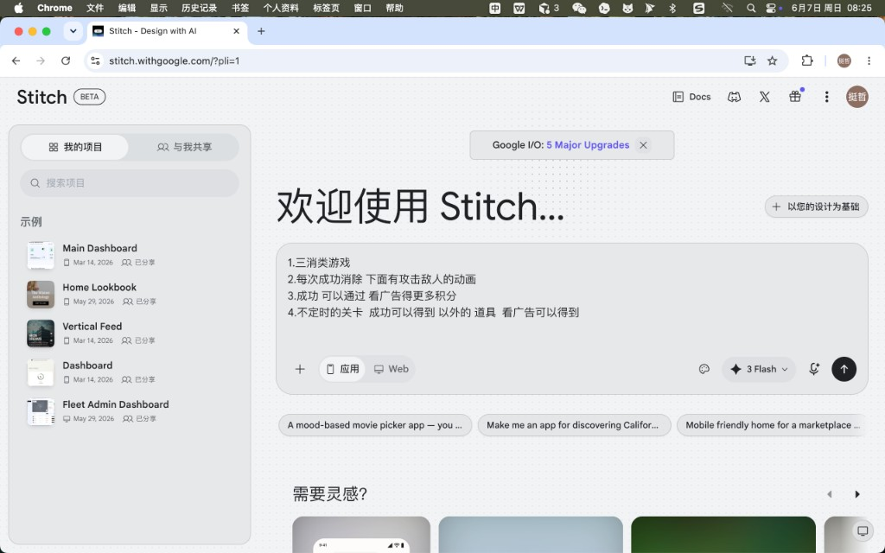
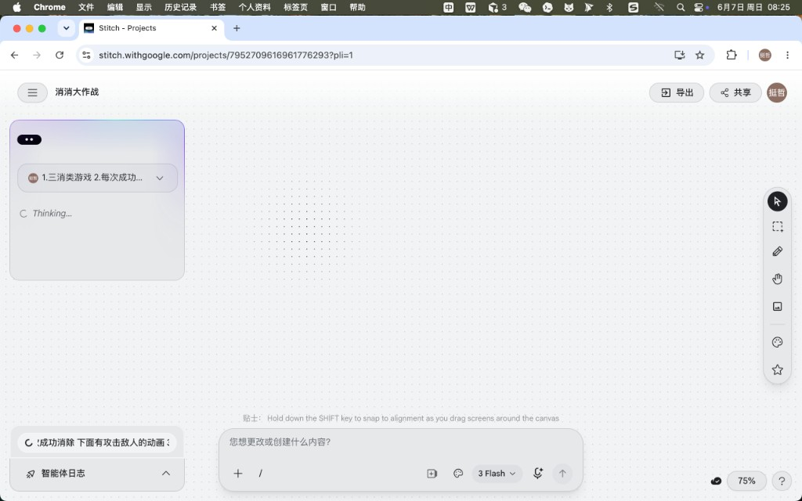
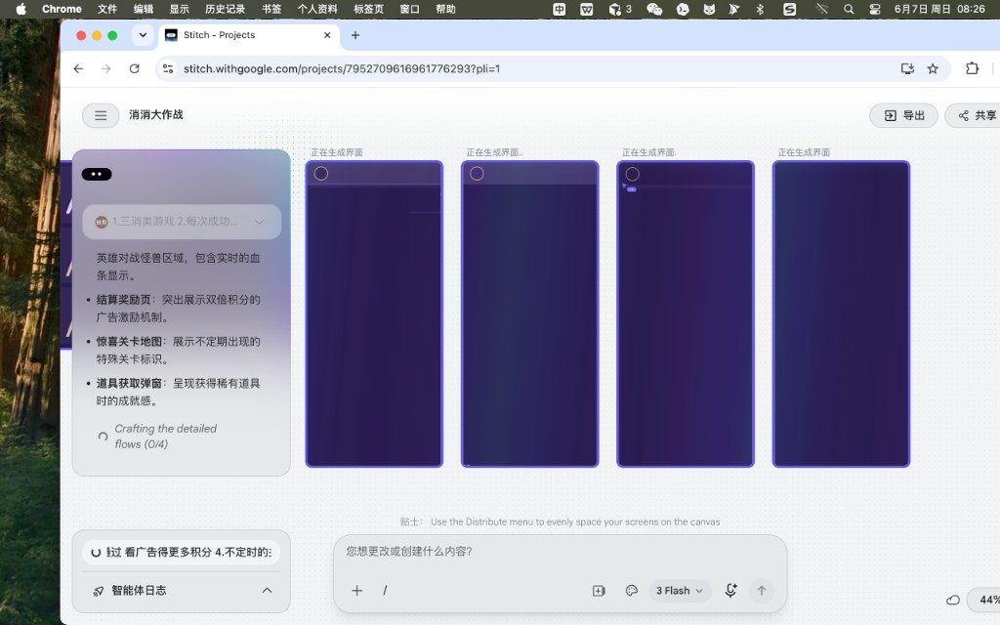
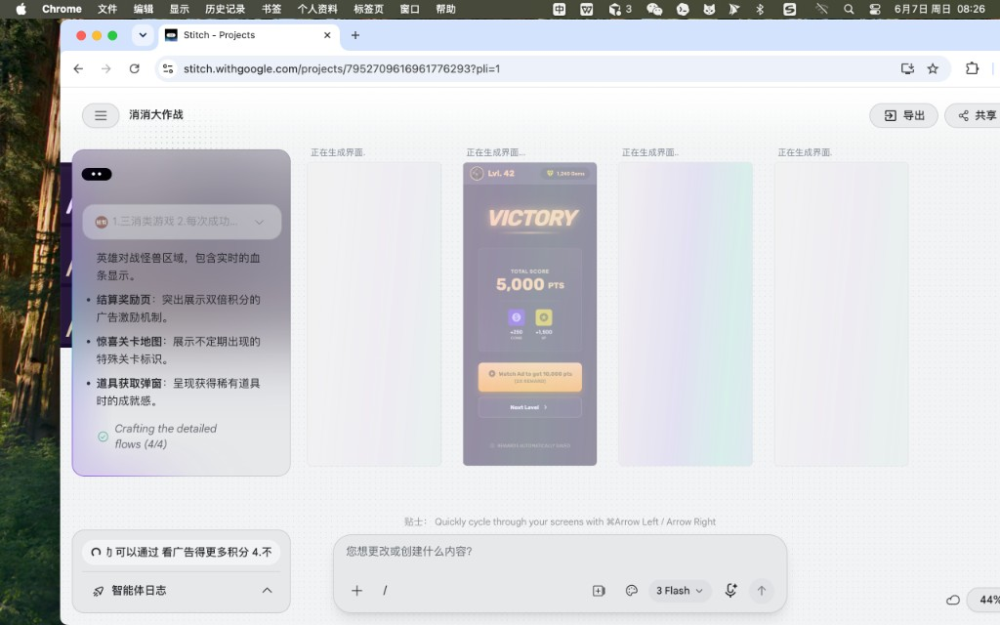
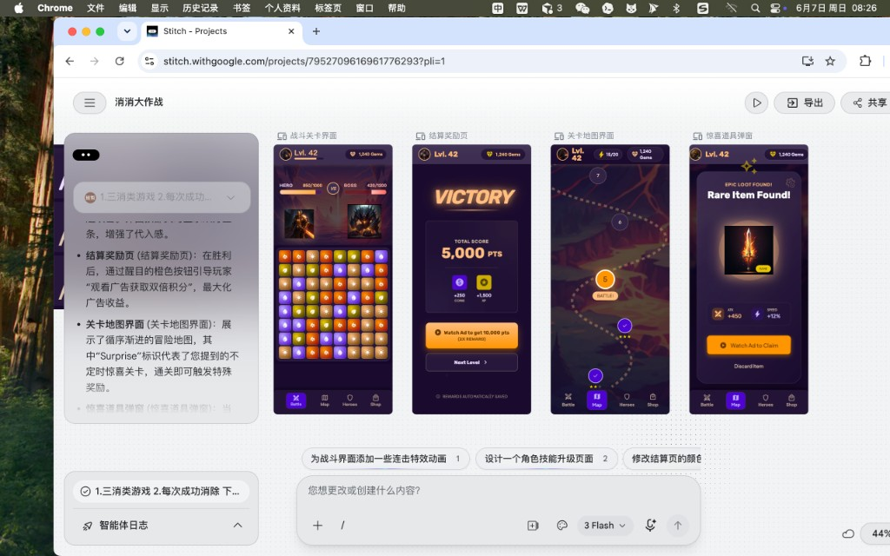

自己写的：
不是广告，自己用过了
工具免费，想花钱都不行 每个月都有免费额度。因为是 beta 版本不算是正式发布，额度用完也只有等下个月刷新
有时候我们有很好的想法，也有明确的思路。但是做出来的东西 很粗糙，没有设计感。
没有美术的专业美感，只是完成了功能，并没有让产品 更好用。让更多人喜欢用。做出来的东西就很像草台班子。
或者连草台班子都算不上 毕竟就是一个人。
然后我发现了 谷歌的这个工具。感觉不错
比很多 AGENT 出的草图好太多了
下面是AI 写的
不会画原型？我用 Google Stitch 十分钟搭出「消消大作战」四屏界面

Google Stitch 上手指南 · 从一句话到可点原型
技趣星球 · 用技术创造乐趣
下面两段录屏节选，是我用 Stitch 做「跳绳记录 App」的真实操作（项目名 Vision Jump Tracker）。从四屏开始生成到成品，全程在浏览器里完成。


你想做一个 App，脑子里有画面，但不会 Figma，也不会画线框图。
以前只能写一大段需求文档，扔给 AI 写代码——结果经常跑偏，改来改去。
Google 在 2025 年 I/O 上推出的 Stitch（stitch.withgoogle.com），走另一条路：先出高保真界面，再导出 Figma 或 HTML 代码。
我按网上教程和官方能力，用中文界面跑了一遍「三消 + 打怪 + 看广告得积分」的小游戏原型。从打开网页到四张手机屏并排出来，大约十分钟。
一句话结论：Stitch 适合「想法还不成熟、但想先看见长什么样」的阶段；免费、浏览器里就能用，不用装软件。
难度：⭐ 到 ⭐⭐
Stitch 像「会画图的 AI 产品经理」
传统流程是：你口述 → 设计师画稿 → 开发照着做。Stitch 把前两步压缩成一次对话。
它底层是 Google 的 Gemini 多模态模型（界面里可选 3 Flash 等档位）。你输入文字、上传草图或截图，甚至对着画布说话，它就在无限画布上生成可编辑的手机/网页界面。
和 Midjourney 不一样：Stitch 产出的是有层级、可导出、能连屏成原型的 UI，不是一张 flat 配图。
当前费用（2026 年初）： Labs 阶段免费。标准模式约 350 次/月，实验模式约 50～200 次/月，无需绑卡。具体额度以官网为准。
使用条件： 18 岁以上 Google 账号，且所在地区能使用 Gemini。
第一步：打开 Stitch，选「应用」还是「Web」
难度：⭐
- 浏览器访问 stitch.withgoogle.com
- 用 Google 账号登录
- 首页大输入框下方，选 应用（手机图标）或 Web（显示器图标）
做手游界面就选「应用」。做落地页选「Web」。
左侧是「我的项目」列表，可以搜历史项目；下方有示例项目可参考。

第二步：写需求——越具体，界面越像你要的
难度：⭐
官方和社区教程都强调：一条线程里只做一个平台（手机或网页），别混着来。
我这次用的是「消消大作战」示例，首条提示词可以写成：
做一个三消类手游，中文界面，暗色游戏风。
核心玩法：
1. 上方是英雄打 BOSS，有血条
2. 下方是三消棋盘，消除后触发攻击动画
3. 过关结算页：突出「看广告双倍积分」按钮
4. 关卡地图：有不定时出现的惊喜关卡
5. 获得稀有道具时弹窗，可看广告领取
请一次生成：战斗关、结算页、关卡地图、道具弹窗，共 4 个手机屏。要点（综合 Google 开发者论坛提示指南 与多篇英文教程）：
- 说清平台：「手机 App」「iOS 风格」比只说「做个游戏」强很多
- 说清用户场景：给谁用、什么情绪（紧张、成就、放松）
- 一次点名要几张屏：比生成一张再补三张更省额度
- 给视觉参考：「像 Candy Crush 的棋盘 + RPG 血条」比抽象描述好
发出去之后，画布左侧会出现需求卡片，状态先是 Thinking...，再进入 Crafting the detailed flows。

第三步：等 AI 拆流程、逐屏生成
难度：⭐
2026 年 3 月大更新后，Stitch 从「单屏聊天」变成 无限画布 + 设计智能体：
- 左侧卡片会列出它理解的子功能（血条、广告按钮、惊喜关卡等）
- 中间并排出现手机框，先显示「正在生成界面...」
- 进度如 Crafting the detailed flows (0/4) → (4/4) 打勾
这一步不用你操作，等即可。复杂项目可能 1～3 分钟出齐四屏。

生成过程中会先出完某一屏（例如 VICTORY 结算页），其余仍在加载——属于正常现象。

第四步：看成品——四屏已经能当原型讲需求
难度：⭐
我这次跑出来的四屏（见头图）：
左侧卡片还会用中文解释设计理由，比如「结算页用醒目橙色引导看广告」。这对跟团队或客户对齐很有帮助。
生成完成后，底部会出现建议下一步，例如：
- 为战斗界面加连击特效
- 设计角色技能升级页
- 修改结算页配色
点一条或自己在输入框里改都行。

第五步：迭代、连原型、导出
难度：⭐⭐
用对话改细节
底部输入框占位符是「您想更改或创建什么内容?」。常用改法：
把结算页主按钮改成绿色，文案改成中文「看广告领双倍」战斗界面棋盘加大，血条移到最顶部小改优先用对话；大改可以选中某一屏重新描述。2026 更新也支持在画布上直接改文字、换图、调间距，不必每次都重新生成。
连屏成可点原型
多屏都满意后：
- 选中多张屏
- 使用 Stitch（连屏）功能，让 AI 推断跳转关系
- 点 Play 预览完整流程
适合演示「过关 → 看广告 → 回地图」这类路径。
导出给设计师或开发
社区常见链路：Stitch 出稿 → Figma 修 → v0 / Bolt / 人工写 React。
DESIGN.md：多屏风格不跑偏
做超过 2 屏时，建议让 Stitch 维护一份 DESIGN.md，写清主色、字体、圆角、间距。之后新生成的屏会尽量遵守同一套规范。
示例片段：
## 颜色
- 主色：#6366F1
- 强调（广告按钮）：#F97316
- 背景：#0F172A
## 规则
- 广告 CTA 必须用橙色、全宽按钮
- 手机屏宽 390px，暗色游戏风标准模式 vs 实验模式：怎么选
经验： 纯文字做多屏手游 → 标准模式够用。要把白纸草图或竞品截图喂进去 → 开实验模式，但 Figma 导出要另想办法（例如截图或 HTML）。
和其他工具比一比（帮你决定要不要试）
Stitch 不是 Figma 替代品，而是把「从 0 到能看」的时间从几天压到几分钟。
我踩过的坑 & 网上教程共识
- 一条提示词塞 10 个屏 → 质量明显下降。先核心 3～4 屏，再扩展。
- 不说明手机还是网页 → 布局经常不对。开头就写死平台。
- 只看图不看代码 → 开发仍从零量尺寸。至少导出 Figma 或 HTML 当参考。
- 实验模式出稿却想进 Figma → 当前无法直接导出，要提前选模式。
- 把第一版当终稿 → 好结果往往来自 3～5 轮小改，而不是重 roll。
Voice Canvas（语音改稿）和粘贴 URL 提取竞品风格，是进阶玩法；本文流程跑通后再试即可。
今天的小结
今天只需要记住 3 件事：
- Stitch = 浏览器里的 AI 原型机，地址 stitch.withgoogle.com，免费额度够试水
- 写好「平台 + 用户 + 多屏清单」，比泛泛说「做个 App」重要十倍
- 出稿后用对话微调、Play 连屏、再导出 Figma 或代码——别停在第一张图
如果你也有一个「字词星球」「音标星球」式的产品想法，不妨先用 Stitch 把主流程四屏画出来，再决定要不要写代码。比直接让 AI 开写，省很多返工。
附录：可直接复制的英文/中文提示词模板
模板 A · 工具类 App（中文）
设计一个手机 App，iOS 风格，浅色简洁。
用户：25～40 岁上班族。
需要 4 屏：登录、首页仪表盘、设置、个人资料。
首页要有今日任务卡片、进度环、底部 Tab 导航。
请保持统一圆角和蓝色主色。模板 B · 游戏（本次案例精简版）
Mobile match-3 game, dark fantasy UI, English labels OK.
Screens: battle with hero/boss HP bars, victory rewards with rewarded ad button,
level map with bonus nodes, loot popup with watch-ad claim.
Generate all 4 screens in one flow, consistent art style.模板 C · 迭代单屏
Keep the battle screen layout. Change gem colors to red/blue/green/yellow only.
Add a combo counter top-center. Localize all text to Simplified Chinese.参考与延伸阅读
- 官网：Stitch - Design with AI
- 背景：Stitch 源自 Google 收购的 Galileo AI（2025 I/O 发布）
- 英文实操：LogRocket · Google Stitch tutorial
- 功能综述：Google Stitch Complete Guide (2026)
- 生态对比：o-mega · Google Stitch & AI Design Tools